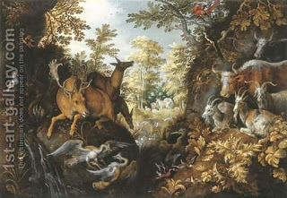

Chullin 80 - The Product of a Deer and a Goat
The product of crossbreeding between a deer and a goat is called a "koy". Rabbi Eliezer and the Sages disagree about its laws, for example, in the case of a male deer that mated with a female goat, who then gave birth. The Sages hold that when the Torah mentions a goat, part-goat is also included, and Rabbi Eliezer maintains that it's not. Accordingly, the Sages say that the prohibition to slaughter an animal and its offspring on the same day applies to a koy, while Rabbi Eliezer says that it does not.
When one slaughters a wild animal, one has to cover its blood with earth. A koy, being partly a wild animal, may require covering its blood - if we attach any importance to the father - or it may not. Accordingly, the Sages do not allow to slaughter a koy on a holiday, because we may dig the earth only for clear cases of blood covering, and not for doubtful ones.
Some say that crossbreeding between a deer and a goat is impossible, and that the "koy" is perhaps a wild ram, or a separate species, not clearly wild or domestic.
Art: Roelandt Jacobsz Savery : A stag, deers, herons, goats, parrots and other animals in a forest